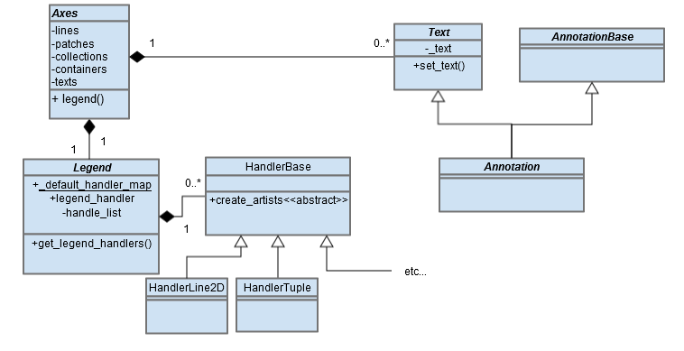

High Level description
For our first issue we decided to fix issue #8236 which
is about adding annotations to legends. An annotation
is generally used bring attention to a particular
part of a figure by having an arrow point it and
a small amount of text to contextualize it. This
is not always the case though. Matplotlib's annotations
are completely customizable to be any size, placement
and style; similar to that of any 2D Line. Therefore,
you can use them to represent certain pieces of data
such as distance, error margins, or to display increases/decreases
over time. When you are doing this you might not
want to clutter your figure with text and instead
move the text to the legend. As an example, you can
see on the image to the left that the user has used
an annotation arrow to represent the distance between
two lines but does not wish to label the arrow on
the figure. As it stands right now there is no way
to add an annotation to the legend.
In matplotlib when you want to append to your legend
you add the "label" key arguement to any plot declaration
you make. For example:
plt.plot([0, 1], [0, 0], label='line1')
plt.legend()
This will create a line and a note on your legend called
"line 1". When you do this for an annotation nothing
happens. Our objective is to add this feature to
annotations.
Detailed description

When planning to add to the legend functionality, one
has to understand how legends are built and structured.
First of all, Axes contain Legends and Legends contain
something called a Legend Handler. Legend Handlers
are what actually create the artists that know how
to draw the shapes onto the legend. For us to grant
the ability to put annotations on legends we would
have to write a legend handler for annotations as
there currently isn't one. Annotations are considered
to be types of text which inherits from Artist; this
makes Annotation a type of artist as well. It follows
that our legend handler would have to create a new
instance of Annotation based on all the aethstetic
information the user inputed such as style and colour,
but with new structural information such as size
and angle to make it fit inside a legend.
Note that, Legends aren't initialized until a call to
plt.legend() is made. Plotting a line and giving
the "label" key arguement will put that Line into
the curent Axes' lines field but will not begin to
create the legend. When plt.legend() is called the
current Axes will begin to initialize its legend_
field by making a call to get_legend_handles(). This
pulls out all the default handlers from the legend
class and creates a new list called handles_original
consisting of all the current axes' lines, patches,
collections, and containers. It then loops through
this new list and grabs all handlers for the the
elements where a label key argument has been defined.
You can see that code here.
Using that information it finally instantiates a
legend with the handlers as a parameter. During the
initialization process the handler's create_artists
function is called and the newly created artist is
returned and stored in the legend's handler_list
field to be used during rendering. You can see a
visual representation of this process in the sequence
diagram on the left.
To implement this feature we need to accomplish two major
things. Right now when an annotation is defined it
is stored in the Axes' texts field. So, we need to
find a way to differentiate between annotations and
any other types of text. To do that we need to either
create an annotations field or add logic to the creation
of the handles_original variable to only take annotations
out of the text field at the time of legend instantiation.
And of course we would need to write a legend handler
for annotations which I described above.
Documentation and User's Guide for D5
import matplotlib.pylab as plt
fig, ax = plt.subplots(1)
ax.plot([0, 1], [0, 0], label='line1')
ax.plot([0, 1], [1, 1], label='line2')
ax.annotate("",
xy=(0.4,1.0),
xytext=(0.4,0.0),
arrowprops={'arrowstyle':'fancy', 'color':'g' },
label='distance')
ax.annotate("test",
xy=(0.3,1.0),
xytext=(0.3,0.0),
arrowprops={'arrowstyle':'<->', 'color':'b' },
label='distance2')
ax.annotate("tester",
xy=(0.3,1.0),
xytext=(0.2,0.0),
label='distance3')
ax.legend()
plt.show()
Adding annotations to legends is now possible! You can use it in the same way you add anything else to a legend. When you define an annotation just give it a "label" key arguement and then call plt.legend() or ax.legend().On the left you can see how to define an annotation with an arrow (distance), with text (distance3) and with both (distance2) and what the result now looks like. The aesthetic fields you set on the arrow and text (such as colour and style) will show up on the legend. Note that any size altering, annotation specific property such as "width" or "headlength" will not be copied on to the legend arrow for cleanliness and to match the documentation for the FancyArrowPatch class.
There were very few hiccups when designing the fix for this; all went according to plan. The Diagram below shows am updated UML diagram that displays our new understanding of the issue. Anything in red was either added or updated by us to implement this feature
As we said in the above section, to immplement this feature we needed to build a legend handler class to handle annotations. The question was where we were going to fit it into the legend handler structure. We knew that it had to inherit from HandlerBase as it contains the important function legend_artist() which is how legends interact with legend handlers, as well as the function update_prop() which allows us to copy all relevant aesthetic properties of the the annotations onto the image we create for the legend. But, we also noticed that in terms of a legend an annotation arrow shares certain properties with a line. To know where to place the arrow on the legend we need to get the location in x and y coordinates. The Handler2Dline class already uses functions go calculate the x and y data. Lucky for us the person that originally built this kept this possibility in mind and made a HandlerNpoints class that calculates xdata. So we have our annotation handler inherit from HandlerNpoints so we can get all the important functions of HandlerNpoints and HandlerBase.
Writing the Annotation handler class was straightforward as we just need to implement the create_artists() function which builds and returns instances of the a Text, FancyArrowPatch, or both and return them. You can see the new class here.
Although, our initial solution proved to be more complicated than it needed to be. We initially believed that we needed to differentiate between annotations and other texts as annotations were getting stored inside Axes instances inside a list called texts with all other texts. So to counter that we made an annotations list to separate annotations from other texts. This turned out to be unnecessary. As you can see here any element of the texts list that doesn't have a handler is ignored (has_handler() will return false). So non annotation Texts are already siphoned out. Thus, the only other major change needed outside of legend_handler.py is the additoin of our annotation handler to the default list of handlers in Legend.py; this will make has_handler() return true for annotations. You can see that change here.
Acceptance Tests
This issue is more of a feature and API addendum. Since this bug involves
annotations, our acceptance tests would involve creating
everytype of style of annotation and checking if they
appear in the legend box. They are based on the documentation
in the Annotation class that can be seen here.
An annotation Arrow consists of different set styles
such as 'wedge', 'fancy', or just '->'. We have to confirm
if that arrow created in the legend matches that of the
arrow created in the figure and that the label inputed
matches the text that appears in the legend box (that
is why every label is different). The tests have been updated for D5 to take into account annotation specific properties such as width, headwidth and headlength. These properties will not affect the arrow on the legend as the FancyArrowPatch classw does not use them. you can see the tests
here:
Tests